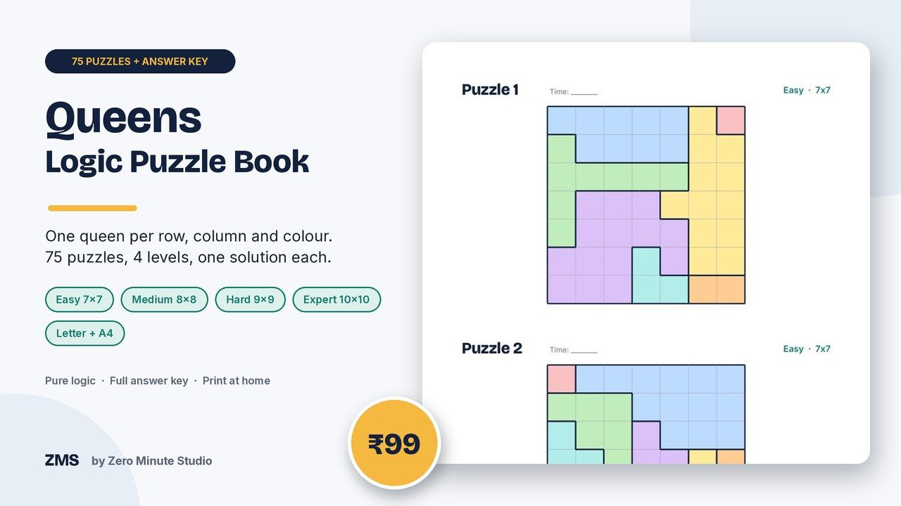
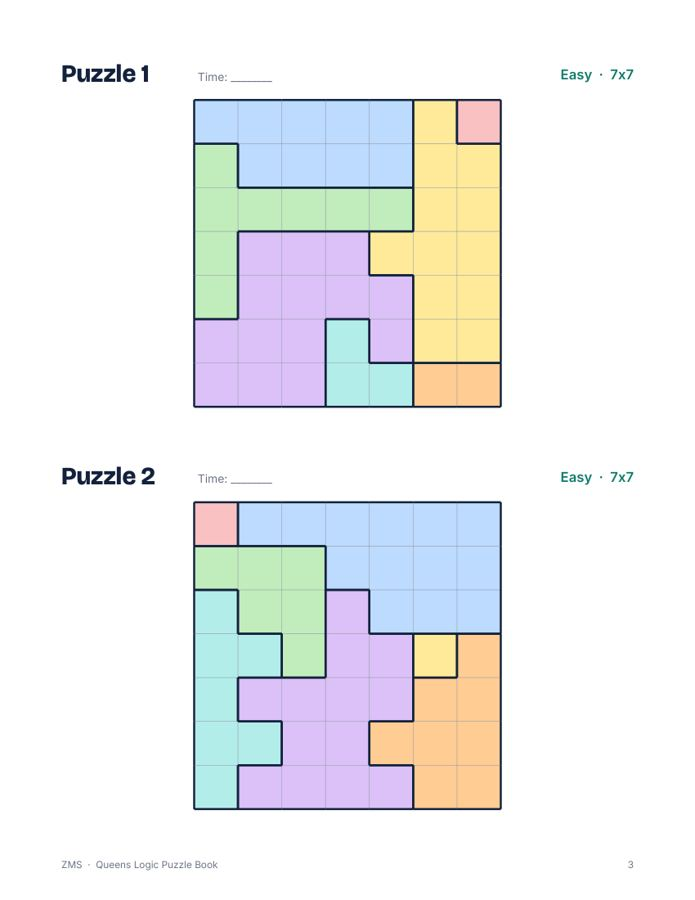
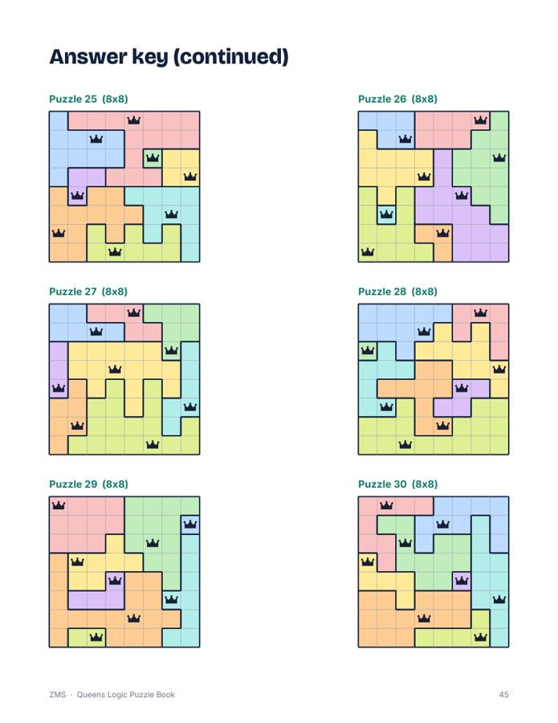
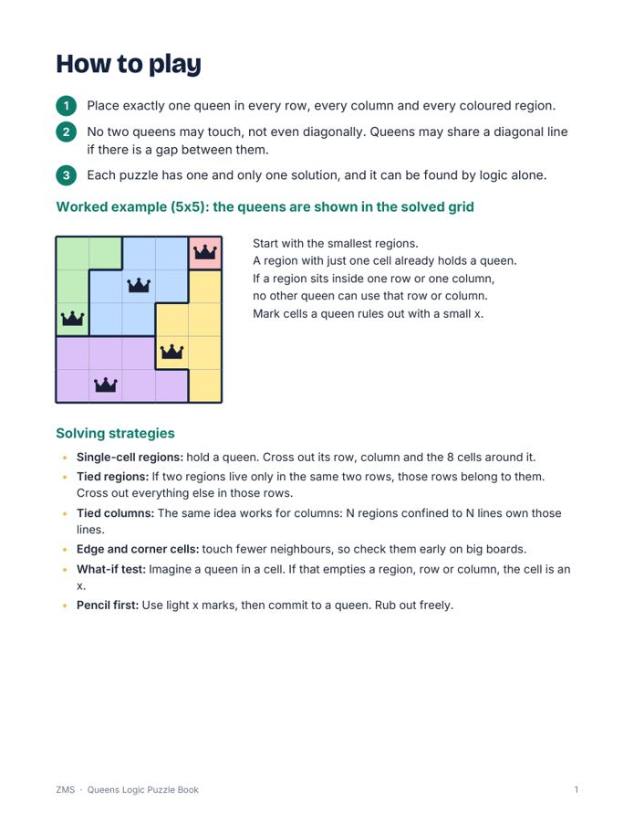
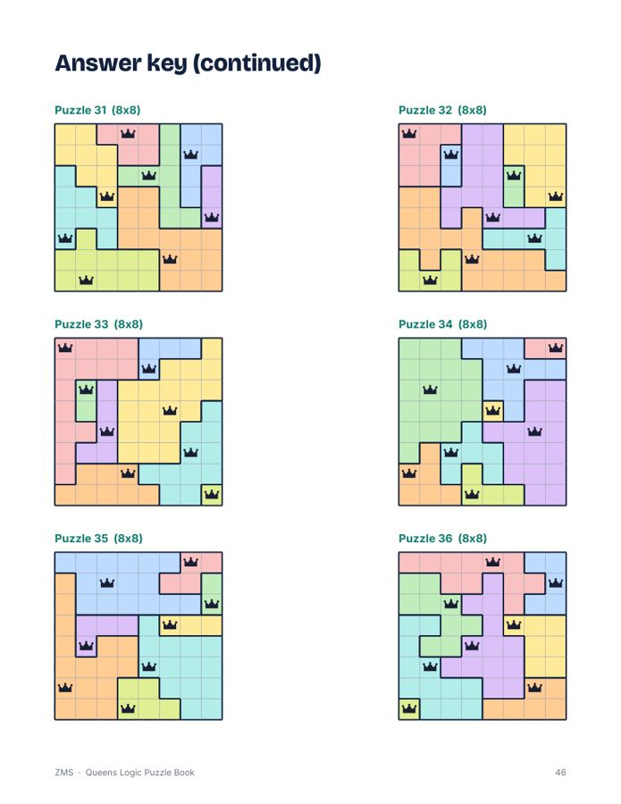

Queens Logic Puzzle Book: 75 Printable Puzzles

Place one queen in every row, column and coloured region, with no two queens touching. That is the whole rule, and it is surprisingly addictive. This book gives you 75 hand-checked puzzles that climb from a friendly 7x7 to a proper 10x10 test, each with exactly one solution you can reach by logic alone.
- 75 puzzles: 20 Easy (7x7), 20 Medium (8x8), 20 Hard (9x9), 15 Expert (10x10)
- Every puzzle verified by a solver to have exactly one solution
- How-to-play page with a worked example and solving strategies
- Progress tracker and a timing line on every puzzle
- Full answer key with queens marked in every grid
- Two print-ready PDFs: US Letter and A4
Preview




FAQ
How does it work? One queen per row, column and colour region, and no two queens may touch, even diagonally.
Is there an answer key? Yes, all 75 solutions are at the back.
How do I get it? Instantly after payment: a US Letter PDF, an A4 PDF and a short README. Print at home.
We don't do refund & return ✌️